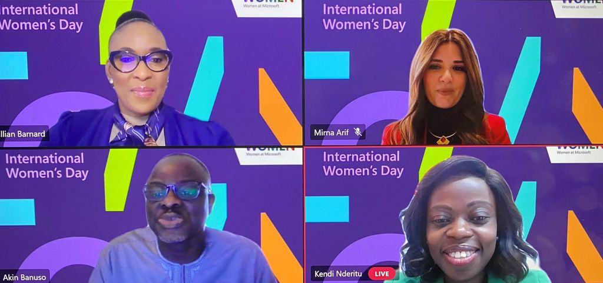

Back
Back
Women Techsters Initiative Launch: Inclusivity for 5 million Women in the African Tech Industr
| April 7, 2021


On International Women's Day 2021, Tech4Dev, in partnership with Microsoft, held a launch event for its Women Techsters Initiative. The Women Techsters is an initiative of Tech4Dev in partnership with Microsoft aimed at bridging the vast digital divide between men and women in the technology ecosystem. The Women Techsters Initiative was borne out of the need to change the narrative of skewed gender numbers in technology by empowering women with digital and deep tech skills and opportunities to pursue careers and interests in technology.
According to the e-Conomy Africa 2020 Report by IFC, Africa's technology industry has an average of 8:2 men to women ratio. These numbers reflect urban cities, and the statistics for women further reduce in suburban and rural areas across the continent. The need for gender parity and inclusivity in the technology space cannot be overemphasised. Studies have shown that STEM subjects serve as significant drivers of economic growth, and having women effectively engaged in the labour force can potentially boost a nation's annual GDP by as much as 70%. Hence, the urgent and cogent reason to have more women in tech.
The Women Techster's pilot program, Nigerian Women Techsters, held in partnership with Microsoft, GIZ and other partners, enabled over 2400 women between the ages of 16-40 across 12 states in Nigeria to pursue careers in tech, start technology or tech-enabled businesses and to study STEM at an advanced level.
During the event, Tech4Dev launched the Women Techsters initiative, a renewed vision and dream to empower 5 million women with digital and deep tech skills across Africa by 2030. In 2021, Women Techsters will impact 10,000 women across 5 African countries – Nigeria, Egypt, South Africa, Kenya and Ghana.
The launch event had in attendance media representatives from the 5 African countries the initiative will focus on for the year. Also in attendance were; the Regional Director of Microsoft Philanthropies Middle East and Africa and the Microsoft Country Managers for Nigeria, Kenya, South Africa and Egypt.
In her opening address, the Regional Director for Middle East and Africa, Microsoft Philanthropies, Ghada Khalifa, stressed the importance of empowering women with digital skills to become active players in ICT and how this inclusion can directly impact the economy. She said, "When we empower girls and women in the ICT industry through greater access to skills and training, we unlock not only innovation but also economic opportunities."
Diwura Oladepo, the Executive Director of Tech4Dev, spoke about the objective behind the Women Techsters initiative—to provide the prerequisite knowledge and insight needed to enable girls and women interested in careers in technology to access the right learning opportunities, gain access to decent jobs within the technology ecosystem and to empower them with the right skills needed to create, grow and scale their technology-enabled businesses and deep tech startups. In her words, "it is crucial to ensure that women are actively engaged in technology as this helps to financially empower them, effectively improve the economic realities of women and the countries at large, eliminate biases in technology research and improve overall productivity and efficiency of the technology ecosystem. Through the Women Techsters, we choose to challenge the status quo – that women can't be active contributors and partakers in technology."
In a panel session moderated by Akin Banuso, the Microsoft Country Manager for Nigeria, with the panelists; Mirna Arif, Lilian Barnard and Kendi Ntwiga-Nderitu (Country Managers for Egypt, South Africa and Kenya, respectively) explored the inclusivity of women in the tech industry and STEM fields as a whole.
Speaking on the gender disparity in the tech ecosystem, Lilian Barnard, Microsoft Country Manager, South Africa, reiterated that people only dream as far as their eyes can see. In her words, "Women don't have access to programs that would equip them with digital skills relevant to the tech world. We are glad that organisations like Tech4Dev are taking it upon themselves to hold programs, seminars and events that enlighten, educate and inspire women to take up tech careers."
Kendi Ntwiga-Nderitu, Microsoft Country Manager, South Africa, encouraged women to push for a better future. She said, "Traditionally, women have been and are known to be naturalists in society, whether it is in bringing communities together or playing roles to foster growth. For women to keep on playing these roles in the 21st century, a world that is tech-inclined, means we have a very significant role to play in the growth and development of our society."
In the same vein, Mirna Arif, Microsoft Country Manager, Egypt, encouraged women to ensure that they put in place plans to grow, challenge the status quo and speak up to pave the way for other women to have seats at the table.